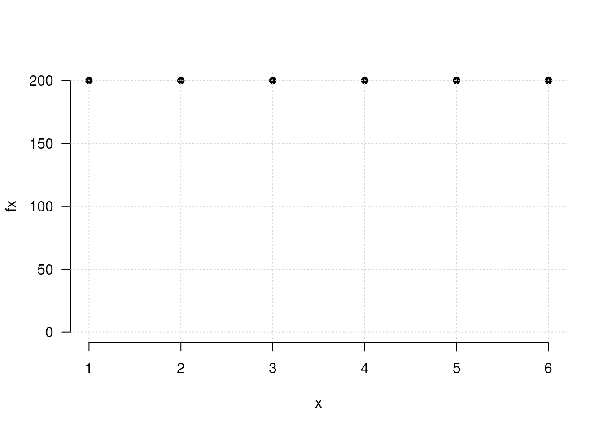

Recursos
Módulo 3- Unidad 3.1
dgonzalez
2. Recursos
Variables aleatorias

2.1 Introducción
El concepto de variable aleatoria constituye uno de los conceptos principales de la probabilidad y estadística. A este concepto se pueden asociar dos paradigmas de evolución histórica segun J.A. Alberth & B. Ruiz (2013) , El primero basada en el resultado de fenómenos aleatorios y por otro lado el proceso que relaciona los conjuntos de espacio muestral y sus respectivas probabilidades, para definir el concepto de variable aleatória como función de números reales y el espacio para el sustento matemático.
Ahora, se puede relacionar el concepto de variable aleatoria a diferentes contextos donde se requiere dar respuesta a preguntas relacionadas con la ocurrencia o no de fenómenos aleatorios que eventualmente se presentarán en el futuro, como por ejemplo:
¿Cuánto tiempo se tarda un estudiante en ir a la universidad?
¿Cuál será el resultado en mi próximo examen de estadística?
El dueño de la cafetería se puede preguntar ¿Cúantas botellas de agua se venderán esta semana?
¿Cuánto tiempo tardaría la entrega de un paquete una empresa de mensajería?
¿Cuánto tiempo dura la bombilla de un vehículo?
¿Qué diámetro tendrá la perforación de una máquina en una lámina de acero que hace parte de una puerta de un vehículo?
¿ cuanto tiempo tardara la creación de la vacuna para el Covid-19?
En todos los casos se trata de preguntas que tienen diferentes respuestas, o que no tienen un único valor como respuesta. En este documento se estudiará el concepto de variable aleatoria y mediante la definición de una función matemática que nos permita caracterizar su comportamiento, realizaremos diferentes cálculos de probabilidades de interés. Para ello será necesario retomar conocimientos de cálculo integral que serán expuestos en su momento mediante funciones de fácil manejo.
En esta unidad se tratará el caso univariado discreto, luego el caso continuo,con sus principales características, conceptos relacionados con los vistos en el modulo anterior.
Definición: Variable aleatoria
Una variable aleatoria \(X\) es una función que asigna a cada valor de un espacio muestral \(S\) un numero . El conjunto formado por estos números conforman un subconjunto de los reales llamado rango de la variable X, (\(R_{_{X}}\))
Las variables aleatorias se clasifican teniendo en cuenta las características de su rango en discretas, continuas. La distribución de una variable aleatoria será univariada si se estudia el comportamiento de una sola variable y serán multivariadas si se considera el comportamiento conjunto de varias variables definidas sobre el mismo espacio muestral.Este ultimo caso sera tratado en la unidad 3.2
Tipos de variables
Una variable \(X\) se considera DISCRETA si su rango \(R_{_{X}}\) es un conjunto finito o infinito numerable de valores.
Se considera CONTINUA si su rango \(R_{_{X}}\) es un conjunto de valores infinito no numerable y generalmente corresponde a unión de intervalos.
El siguiente ejemplo ilustra el concepto de variable discreta:
Ejemplo 1 : Un experimento aleatorio \(E\), consiste en lanzar una moneda balanceada al aire tres veces y observar el orden de caras (\(c\)) y sellos (\(s\)) que se obtienen en los tres lanzamientos. El espacio muestral \(S\) de \(E\), estará dado por:
\[S =\{(s,s,s),(s,s,c),(s,c,s),(s,c,c),(c,s,s),(c,s,c),(c,c,s),(c,c,c)\} \]

Sea \(X\) la variable que asigna a cada resultado el número de caras en los tres lanzamientos de la moneda. En este caso el rango asociado a la variable será \(R_{_{X}}=\{0,1,2,3\}\) determinado por la regla de asignación: número de caras en los tres lanzamientos de la moneda. A cada valor \(X\) en \(R_{_{X}}\) le corresponde un valor de probabilidad \(f_{_{X}}(x)=P(X=x)\) conformando de esta manera una función. La expresión \((X=x)\) hace referencia al evento que contiene todos los resultados en \(S\) y que tiene como imagen el número real \(x\). En este ejemplo \((X=0)=\{(s,s,s)\}\) ; \((X=1)=\{(s,s,c),(s,c,s),(c,s,s)\}\) ; $(X=2)={(s,c,c),(c,s,c),(c,c,s) } $ y \((X=3) =\{(c,c,c) \}\). Bajo el supuesto que la moneda es balanceada, se cumple que los resultados en \(S\) son igualmente posibles y por lo tanto:
\[f_{_{X}}(0) =P(X=0)= \frac{1}{8} \hspace{.2cm} ,\hspace{.5cm} f_{_{X}}(1) = P(X=1)=\frac{3}{8},\] \[f_{_{X}}(2) = P(X=2)=\frac{3}{8}\hspace{.2cm} ,\hspace{.5cm} f_{_{X}}(3) =P(X=3)= \frac{1}{8}\]
2.4 Variables aleatorias discretas
Definición: Función de distribución de probabilidad
Para \(X\) un variable aleatoria discreta, su función de distribución de probabilidad estará dada por \(f(x)\), la cual proporciona las probabilidades asociadas a todos los valores de su rango \(R_{X}\) . Esta función debe cumplir las siguientes propiedades:
\(f(x) = P(X=x) > 0\)
\(\sum_{R_X} f(x) =1\)
En el Ejemplo 1 se puede resumir de la figura 1 de la siguiente manera:
| \(x_i\) | \(n_i\) | \(f(x_i)\) |
|---|---|---|
| 1 | 200 | 0.1666667 |
| 2 | 200 | 0.1666667 |
| 3 | 200 | 0.1666667 |
| 4 | 200 | 0.1666667 |
| 5 | 200 | 0.1666667 |
| 6 | 200 | 0.1666667 |
| Total | 1200 | 1.0000000 |
La función \(f_{_{X}}\) definida se denomina función de distribución de probabilidad de la variable \(X\) y establece la probabilidad de que la variable tome el valor respectivo, es decir \(f_{_{X}}(x)=P(X=x)\). El siguiente ejemplo ilustra con mayor detalle la forma de encontrar funciones de probabilidad.
La probabilidad teórica de que la variable \(X\) tome cada uno de los valores \(x\) es la misma e igual a \(1/6\), bajo el supuesto de que el dado está balanceado, esto es: \(f_{_{X}}(1) = f_{_{X}}(2) = f_{_{X}}(3) = f_{_{X}}(4) = f_{_{X}}(5) = f_{_{X}}(6) = 1/6\) es por esto que se afirma que los eventos simples son igualmente probables o posibles (equiprobables).
De acuerdo con lo anterior la frecuencia absoluta esperada para cada resultado es igual a \(1/6 \times 1200 = 200\).
x=1:6
fx=c(200,200,200,200,200,200)
data=data.frame(x,fx)
fig=ggplot(data=data, aes(x , fx))+
theme_minimal() +
geom_point(color="blue")+
ggtitle("Frecuencia esperada para los posibles resultados al lanzar un dado legal")+
labs(x="puntos" , y="f(x)")
fig